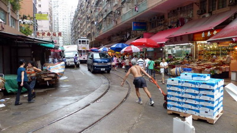

文字旅行
人車併行的香港春秧街
作者：XXX
日期：2017/6/28 FB：XXX藝想世界

I Love Hong Kong
來到香港除了夜景與美食之外，也想看點深具香港特色的傳統菜市場，那就是「春秧街」。
春秧街的名字來自該地區的開發商郭春秧， 福建同安人，早年喪父，16歲遠渡南洋，投靠伯父郭河東，在糖廠學習製糖技術。
後來，他成為當地四大糖商之一。他曾回家鄉福建投資和捐助，建設農場、糖廠、貿易行及小學等，並且鋪路造橋，贈醫施藥。
1930年代政府將該處其中一條街命名為「春秧街」，以表揚他的貢獻。
搭上俗稱叮叮車的雙層電車， 一路觀賞街景大樓，最後轉入狹窄的春秧街，被兩邊的高樓包圍著的春秧街，宛如峽谷一般，人們就在這裡討生活賣魚肉賣菜賣水果，
拉著貨物的工人、買菜的人們、觀光客…使這條街道門庭若市，電車自遠處慢慢開了進來，前方的車子與人們就會適時閃開來，好讓貨車通行，彼此默契十足。
下雨後濕漉漉的街道與工人們的汗水交織著，生命的交響曲每個人演奏的方式即使不同，但填飽肚皮的目的則是一致的。